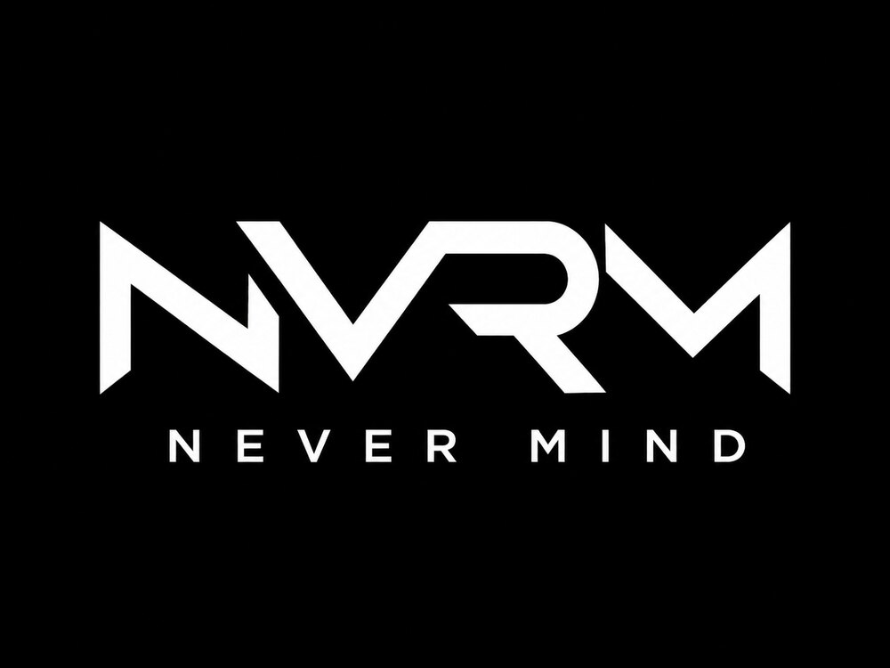

Never Mind is a clothing brand. When its founder needed an acronym for it, Omar proposed NVRM — deliberately not NVM, which is too overused to be ownable.

NVRM logo
The name
NVRM rather than NVM: NVM is used everywhere, and the extra letters give the mark a more distinctive shape.
The concept
A complete branding concept for the clothing line, developed independently ahead of the client's own logo.
Status
The client's final logo came from another designer, so what's shown here is independent concept work rather than delivered branding.